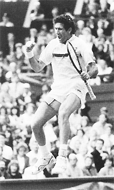
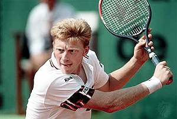
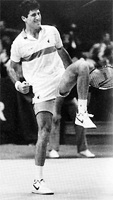
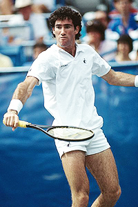
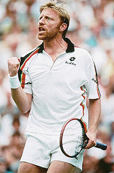
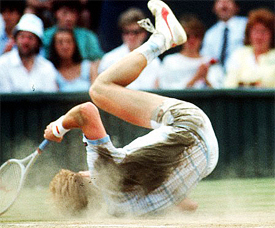

← Bài trước: The Tennis Parent: Blunders and Solutions | 🏠 Mental Game Trang chủ | Bài tiếp: → The Value of Optimism: Michael Chang
Giá trị của lòng hy vọng: Brad Gilbert
Thư viện kiến thức quần vợt thống nhất — Cơ bản, Phân tích kỹ thuật, Thư viện tham khảo và nhiều hơn nữa
Giá trị của lòng hy vọng:Brad Gilbert
Bởi Allen Fox, Ph.D.

Hy vọng có thể là cơ sở cho những chiến thắng dường như kỳ diệu.
Nguyên liệu quý giá nhất mà một tay vợt có thể sở hữu khi mọi thứ đang đi sai là "hy vọng". Tự tin hay lòng tự tin, dù có hữu ích đến đâu, cũng không phải lúc nào cũng có thể đạt được hay thực tế.
Nhưng hy vọng thì có thể. Không chỉ hy vọng là thực tế, mà nó luôn luôn là một trạng thái cảm xúc có sẵn.
Không có lý do hợp lý nào để bao giờ mất hy vọng trong suốt quá trình thi đấu trận. Câu hỏi về chiến thắng hay thất bại trong một trận quần vợt luôn là vấn đề về xác suất, không phải chắc chắn.
Bất kể bạn đã đứng sau đến đâu, xác suất chiến thắng của bạn sẽ không bao giờ bằng không cho đến khi điểm cuối cùng đã được chơi hoặc bạn bỏ cuộc. Đây là hậu quả của hệ thống tính điểm trong quần vợt, yêu cầu chiến thắng điểm cuối cùng và làm cho việc bảo vệ một lợi thế trở nên bất khả thi. (Nhấn vào đây để biết thêm chi tiết.)
Vì vậy, hy vọng chiến thắng luôn là hợp lý. Duy trì hy vọng trong mọi trường hợp là nghĩa vụ bất biến của người cạnh tranh thực sự.
Bị đứng sau trong một trận quần vợt giống như đang xem một cánh cửa đóng lại. Bạn có tùy chọn nhìn vào phần cửa đã đóng, hoặc phần còn mở - ngay cả khi đó chỉ là một khe hở.
Đây là nơi người cạnh tranh có tùy chọn chọn giữa hai nhận thức về thực tế hoàn toàn đúng. Những người vĩ đại chọn cái khiến họ cảm thấy tốt - hy vọng.
Một ví dụ tuyệt vời khác về sức mạnh của lòng lạc quan và hy vọng là trận thắng kỳ diệu của Brad Gilbert trước Boris Becker tại Giải quần vợt Mỹ Mở rộng năm 1986. Không thể tin được, Gilbert đã giành chiến thắng trận đấu sau khi bị thua 2 set to love và thua 3-0 trong set thứ ba.

Năm 1986, Boris Becker vẫn còn gần đỉnh cao sức mạnh của mình.
Trong cuốn sách của mình, "Winning Ugly," Brad mô tả chi tiết về quá trình suy nghĩ của mình sau khi bị thua đến vậy trước Becker. Brad đã ghi lại trong cuốn sách của mình rằng đây là một ví dụ tuyệt vời về cách sự kết hợp giữa kế hoạch trước trận đấu thông minh và sự tỉnh táo trong suốt trận đấu có thể dẫn đến chiến thắng.
Nhưng tôi cũng thấy đây là ví dụ tuyệt vời nhất về cách lòng lạc quan và hy vọng có thể dẫn đến chiến thắng trong một tình huống mà đối với hầu hết mọi người dường như hoàn toàn tuyệt vọng.
Năm 1986, Boris Becker vẫn còn gần đỉnh cao sức mạnh của mình và là người được ưa thích nặng nề trong trận đấu vòng 16 trước tay vợt thô ráp Gilbert. Kết quả được dự đoán rộng rãi dường như là điều chắc chắn khi Boris giành được hai set đầu tiên một cách dễ dàng, sau đó giành được ba game đầu tiên trong set thứ ba.

Quy trình suy nghĩ trong trận thắng của Gilbert là gì?
Brad đã biết, cũng như mọi người trên đường đi, rằng Becker là một người chạy đầu tiên tuyệt vời, tự tin của anh ta phồng lên rất lớn khi anh ta dẫn đầu, và anh ta thường là người tốt nhất trong việc kết thúc khi anh ta có lợi thế.
Tình huống này sẽ có hầu hết mọi người lên kế hoạch cho chuyến đi về nhà, nhưng không phải Brad. Gilbert biết rằng Becker có một điểm yếu Achilles có thể vẫn còn có thể phát huy tác dụng ngay cả ở giai đoạn này dường như quá muộn.
Đó là một ngày nắng nóng và cực kỳ ẩm ướt ở New York. Trận đấu đã bị trì hoãn vài giờ do mưa sáng. Brad nghĩ rằng nếu anh ta có thể giữ được serve trong set thứ ba và tìm cách phá vỡ lại, Becker có thể trở nên khó chịu vì vẫn còn trên sân và phải đấu tranh để giành chiến thắng trong một trận đấu anh ta nghĩ rằng đã nên kết thúc.
Brad suy nghĩ rằng nếu anh ta có thể bắt đầu làm phiền Becker, sự khó chịu này có thể dần dần chuyển thành mất bình tĩnh và tức giận. Kết quả cuối cùng có thể thậm chí là một sự sụp đổ lớn. Nó đã xảy ra trước đó trong một trận đấu mà Brad đã thắng trước Boris vào đầu năm.
Và trong suốt hai giờ tiếp theo, chính xác điều đó đã xảy ra. Bạn sẽ không muốn đặt cược vào điều đó, nhưng đối với Brad thì đó chắc chắn là một khả năng, và cố gắng để nó xảy ra là một lựa chọn tốt hơn so với trở nên tuyệt vọng và sau đó chắc chắn thua.

Brad biết rằng làm cho Boris đánh một quả bóng nữa có thể tạo ra sự sụp đổ mà anh ta đang tìm kiếm.
Ở giai đoạn này, Gilbert không cần phải tin chắc rằng anh ta sẽ giành chiến thắng trận đấu. Nhưng anh ta có sức mạnh tinh thần để chạy qua một kịch bản mà anh ta biết có thể xảy ra.
Điều kỳ diệu là đánh giá tích cực, mục đích và chính xác này đang đi qua đầu một tay vợt khi anh ta đã ở trên sân trong hơn hai giờ và bị thua hai set và một điểm.
Kịch bản có thể xảy ra đã cho anh ta một kế hoạch và hy vọng. Với cách suy nghĩ tích cực này, không có gì lạ khi Gilbert là người thành công vượt trội nhất của thời đại mình.
Brad đã thực sự đi vào trận đấu với danh sách kiểm tra các điểm mà anh ta cảm thấy có thể tạo ra tác động đối với Boris. Những điểm này bao gồm quyết định của anh ta không bị ấn tượng với bất cứ điều gì Boris làm, để cho anh ta đánh bóng cứng như anh ta muốn, nhưng làm cho anh ta phải làm điều đó lặp lại.
Mục tiêu của anh ta là cố gắng đưa mọi cú trả giao bóng vào chơi, thể hiện sự nhiệt tình của Boris, và làm cho anh ta đánh một quả bóng nữa bất cứ khi nào có thể. Ngay cả Boris cũng chỉ có thể đánh được nhiều quả thắng trước khi anh ta bắt đầu bỏ lỡ.
Và nếu điều này xảy ra và Boris bắt đầu hét lên chính mình bằng tiếng Đức, Brad biết đó là một dấu hiệu rất tốt rằng anh ta đang bị rung lắc. Câu hỏi là, anh ta có thể đưa anh ta đến điểm đó được không?
“Khi Becker chạy với một lợi thế, tự tin mà anh ta thể hiện vượt xa sự kiêu ngạo,” Brad đã viết. “Anh ta nói với bạn bằng ngôn ngữ cơ thể của mình rằng anh ta biết mình tốt hơn người khác. Ngoại trừ tôi không tin.”

Becker thể hiện với bạn bằng ngôn ngữ cơ thể của mình rằng anh ta biết mình tốt hơn.
Với Boris dẫn 3-0, Brad biết Becker đã kết luận anh ta sẽ thắng. Anh ta quyết định rằng nếu anh ta có thể kéo dài set thứ tư thì mọi thứ đều có thể xảy ra.
Trong điều kiện nóng nực và ẩm ướt, Boris có thể rất tức giận nếu anh ta phải chơi thêm quần vợt hơn anh ta mong đợi. Và chính xác điều đó đã xảy ra. Brad giữ serve, sau đó với sự giúp đỡ của hai lỗi giao bóng liên tiếp, anh ta phá vỡ Boris để đạt được 2-3.
Trận đấu diễn ra trên serve cho đến khi vào vòng đấu loại trực tiếp. Sau đó một cách bất ngờ, tại 2-2 trong vòng đấu loại trực tiếp, chân của Becker đã rời khỏi mặt đất và anh ta ngã một cách rất đau đớn.
Và anh ta không đứng dậy. Thay vào đó, anh ta nằm đó trong một thời gian dài, mặt xuống và bắt đầu, có, hét lên bằng tiếng Đức. Cuối cùng anh ta nâng mình lên một gối và thả ra một tiếng hét khủng khiếp, âm thanh của sự đau khổ tuyệt đối và hoàn toàn.
Đối với Brad, âm thanh này là đẹp. Boris đang tan rã. Anh ta mắc hai lỗi cú thuận tay không chủ ý và Brad giành được vòng đấu loại trực tiếp.
Tại thời điểm này, Brad đã viết trong cuốn sách của mình, anh ta biết mình có thể giành chiến thắng trận đấu. Anh ta phá Becker tại love và giành được set thứ tư 7-5.
Tại thời điểm đó, anh ta nhìn vào Boris và thấy một người đàn ông bị đánh bại. Anh ta biết Becker đã quyết định bỏ cuộc và không còn đấu tranh nữa.

Becker nổi tiếng với những cú ngã nặng - nhưng anh ta thường đứng dậy.
Với khán giả hô "USA! USA!", Gilbert giành chiến thắng set thứ năm 6-1. Đây là lần thua đầu tiên của Boris khi dẫn trước 2 set to love.
Và, giống như Michael Chang tại Pháp, hy vọng là một thành phần quan trọng. Như Brad đã nói, “Thay vì cuộn mình và chấp nhận thất bại, tôi tin rằng có một cách để thắng.”
Một lần nữa, điều này đã thể hiện sức mạnh tuyệt vời của lòng lạc quan trong quần vợt, ngay cả trong một vị trí dường như tuyệt vọng trước một trong những tay vợt vĩ đại nhất trong lịch sử quần vợt.
Hai bài viết đầu tiên về Chang và Gilbert đã thể hiện sức mạnh của hy vọng ở những cấp độ cao nhất của quần vợt. Nhưng với bạn? Làm thế nào điều này có thể áp dụng cho trận đấu của bạn? Câu trả lời của tôi là chính xác như vậy.
Trong bài viết thứ ba, hãy cùng xem xét một số ví dụ về cách nuôi dưỡng hy vọng trong những tình huống khó khăn trong các trận đấu câu lạc bộ. Bạn có thể không chơi trên sân đấu Grand Slam, nhưng nếu bạn học cách giữ lòng lạc quan, bạn có thể tạo ra một chiến thắng kỳ diệu của riêng mình. Hãy theo dõi!
Đọc thêm từ Allen!
Hãy ghé thăm anh ấy tại www.allenfoxtennis.net

Thắng trận đấu tinh thần Dr. Allen Fox
Quần vợt là môn thể thao khó nhất về mặt tinh thần do bản chất cá nhân của nó khiến thắng và thua cảm thấy quan trọng hơn chúng thực sự là. Trong cuốn sách mới này, Allen đưa ra các giải pháp đã được chứng minh của mình đối với các vấn đề như bị kẹt, giảm căng thẳng, kết thúc trận đấu và phát triển tự tin. Dựa trên sự nghiệp chơi và huấn luyện thành công suốt đời, đây là một cuốn sách bắt buộc cho tất cả các tay vợt cạnh tranh.
Nhấn vào đây để đặt hàng.

Thắng có thể không phải là mọi thứ, nhưng Dr. Allen Fox chỉ ra rằng, nếu chúng ta trung thực với bản thân mình, thắng vẫn là điều đáng ưa thích hơn thua. Trong cuốn sách mới của mình, The Winner's Mind, Allen đưa ra một kế hoạch nguyên bản, từng bước để thành công trong bất kỳ nỗ lực nào của cuộc sống, dựa trên quan sát cá nhân của mình về sự nghiệp của cả các tay vợt quần vợt thế giới và doanh nhân thành công.
Điểm cuối cùng là rằng ngay cả khi bạn không phải là một nhà vô địch sinh ra - và chỉ một phần trăm nhỏ chúng ta là - bạn vẫn có thể sử dụng các chiến lược thành công của nhà vô địch để nghiêng lợi thế về phía bạn. Viết với sự trung thực khắc nghiệt và hài hước khô khan, Fox đưa ra các đặc điểm tâm lý chung của người chiến thắng trong thể thao và trong cuộc sống. Anh ta giải thích vai trò quan trọng của trí tuệ hơn là cảm xúc. Anh ta phân tích cuộc đấu tranh giữa tham vọng và sợ hãi và sự sợ hãi xâm nhập và phổ biến đối với thất bại mà làm suy yếu rất nhiều người.
Anh ta sau đó nêu ra cách đối mặt và vượt qua những sợ hãi này trong cuộc sống và sự nghiệp của bạn, ngay cả khi chúng ban đầu là vô thức. Phải đọc từ một trong những nhà phân tích xuất sắc nhất trong quần vợt hiện đại, và một người Phục hưng trong cuộc sống. Nhấn vào đây để đặt hàng.
Để mua cuốn sách này, bạn cũng có thể gửi séc 17,95 đô la cho Allen Fox, 1120 Inverness Place, San Luis Obispo, CA. 93401. Giá bao gồm phí vận chuyển.

Allen Fox PhD là một tay vợt chuyên nghiệp thế giới, một huấn luyện viên, một tâm lý học, và một trong những nhà phân tích ban đầu và sâu sắc nhất trong quần vợt hiện đại. Một tay vợt hàng đầu 10 người Mỹ từ những ngày huy hoàng trước quần vợt mở, Fox đã chơi nhiều người vĩ đại nhất, bao gồm Roy Emerson, Rod Laver, Stan Smith và Arthur Ashe. Tại Pepperdine, anh ta đã phát triển chương trình quần vợt nam thành một đối thủ hàng đầu cho các giải quốc gia, và đã cho Brad Gilbert những hiểu biết đã trở thành cơ sở cho "Winning Ugly". Cuốn sách Think to Win của anh ta là một tác phẩm kinh điển hiện đại. Anh cũng đã xuất hiện trong một loạt video được đánh giá cao, bao gồm Pro Secrets of Match Play và Allen Fox's Ultimate Tennis Lesson.
Nguồn: tennisplayer.net lưu trữ — Giá trị của lòng hy vọng - Brad Gilbert.docx (Thư viện giảng dạy của John Yandell, 2002-2022). Được trích xuất và hiển thị dưới dạng HTML cho Tennis Future Lab.